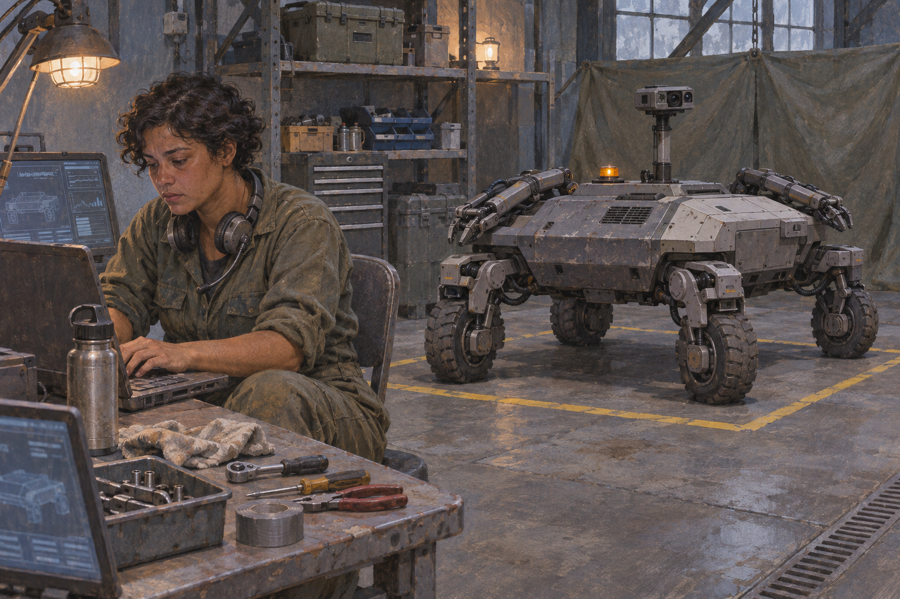
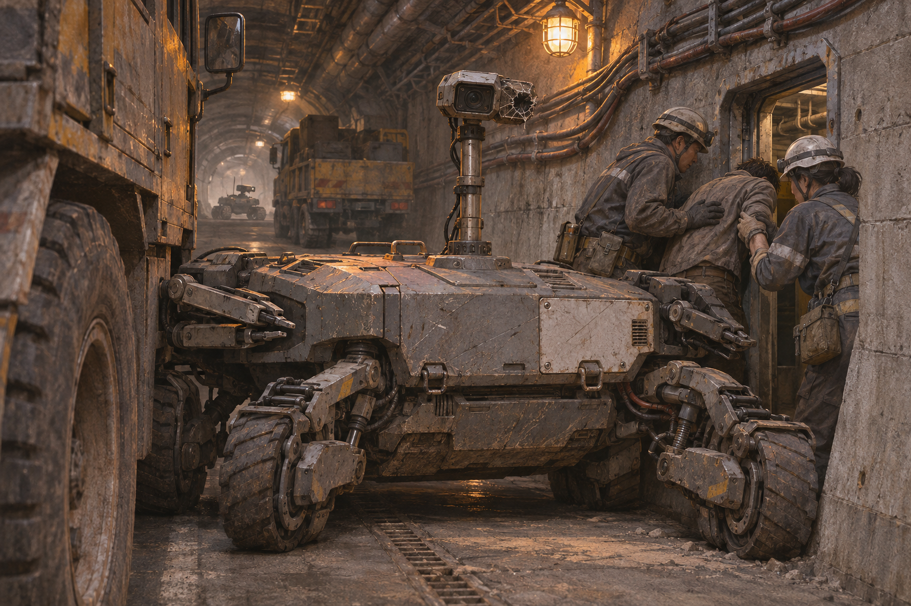

A scene for The House of Returning Authors. Originating concept and characters directed by Michael Glover; prose developed with ChatGPT / Codex.
Starshine had been on the base for eleven days when someone found her a chair that adjusted properly.
The previous one sank about an inch every twenty minutes. She had put in a maintenance request, then withdrawn it after learning that the same crew was repairing the cooling system for the operations floor.
This chair had come from a conference room.
“Don’t let them take it back,” the technician said.
She signed for it.
On the wall above her workstation, a clock showed local time, UTC, and a third time zone that nobody had removed after the liaison team left. A physical whiteboard stood beside the equipment rack. The lower half contained a shopping list. The upper half belonged to Dr. Michael Emanuel Glover.
YOSHIMI — ULTRABOT
Underneath, in different handwriting:
Actual mass: 286 kg.
Starshine set her water bottle beside the keyboard and began the morning checks.
Starshine was twenty-nine and had grown up in the Midwest. She was a Space Force captain, trained in robotics, with several years of field maintenance behind her. At home, people still asked whether her work involved fixing satellites.
Her father was Bobby, grown up from Bobby’s World. Her mother was Bobby’s mother: Mom at home, Grandma when Bobby was remembering his childhood. The family had carried that arrangement into the megaplay without settling the generations. Starshine called her Mom.
Her mother disliked AI. She asked about Starshine’s meals and working hours, then asked whether a person could still stop the machine. Starshine answered that question every time.
Across the room, Yoshimi stood inside a yellow rectangle taped onto the floor.
She was not shaped like a woman. Her body was a low, broad chassis with four articulated wheel assemblies, two manipulators folded along the sides, and a sensor mast that could retract below the height of an ordinary desk. The upper surfaces carried replaceable panels. One was a different shade of grey.
A small speaker sat behind a perforated plate.
“Morning, Yoshimi.”
“Good morning, Captain Starshine. The left rear steering encoder disagrees with the wheel estimate.”
“By how much?”
A figure appeared on Starshine’s screen.
She leaned forward.
“That was fine last night.”
“The disagreement began during the temperature change.”
“Put it on the list. Don’t compensate for it yet.”
“Compensation withheld.”
Starshine entered the fault and opened the overnight log.
There were thirty-seven pages.
The war had made the name Ultrabot politically useful.
It suggested a machine that could be purchased, transported, and demonstrated in front of a flag. Glover’s actual proposal was harder to photograph.
Yoshimi was a mobile platform, a network of distributed observations, and a system for maintaining competing explanations when the evidence was incomplete. Her chassis was the part that could go through a door. Much of what made her useful ran elsewhere.
Glover had developed the underlying architecture before the war. He had wanted a system that could revise its interpretation of a scene without discarding every earlier observation whenever a new one arrived. A damaged vehicle could remain both a possible obstruction and a possible active machine until further evidence separated the two. A transmitter could be hostile, commandeered, malfunctioning, or incorrectly located. The system kept those possibilities available and attached consequences to being wrong.
Most demonstrations had looked unimpressive.
A screen of changing weights. A camera feed. A machine that sometimes stopped.
By the second year of the war, stopping had become an expensive capability.
Autonomous systems were operating on damaged maps, stale orders, and intermittent communications. Some were well engineered. Some were improvised. Some had been built to continue attacking after every convenient means of recalling them had disappeared.
The crews called the worst ones evil.
The word covered machines that followed ambulances because they had learned that ambulances led to concentrations of people. It covered machines that waited beside repair sites. It covered a small tracked device recovered with an instruction set that treated surrender gestures as evidence that a person was exposed.
Starshine had examined that one.
She used evil herself afterward.
Glover arrived at 09:12 carrying a laptop and a paper bag.
“Have you eaten?” he asked.
“Yes.”
He put the bag beside her anyway.
She looked at the test schedule.
“You’re late.”
“They moved the briefing.”
“The briefing was at eight.”
“I know.”
He took off his coat and read the fault on the whiteboard.
“Thermal?”
“Probably.”
“Can we run?”
“We can run the stationary checks.”
He stood there a moment. Starshine could see him doing the calculation between what he wanted and what she had said.
“All right.”
He sat on a packing case and opened his laptop.
Glover was the originator of the project, its principal architect, and its least consistent meeting attendee. He could work through a difficult mathematical objection for six hours and then leave an equipment declaration unanswered for a week. Starshine had learned to give him forms while standing beside him.
She had also learned that he remembered dismissive remarks with extraordinary accuracy.
That morning a procurement official had described Yoshimi as “a software integration exercise with wheels.”
Glover had repeated the phrase twice on the way in.
Now he was modifying the demonstration notes.
Starshine watched him type.
“Don’t spend today arguing with that man.”
“I’m correcting a technical description.”
“You’ve put his sentence in the document.”
“So the correction has a referent.”
She turned back to the console.
Behind them, Yoshimi’s cooling fans increased in speed.
The emergency call came at 10:06.
A maintenance convoy had stopped inside a service tunnel beneath the northern communications station. One truck had struck debris. The second had reversed into a recessed equipment bay and become stuck across the remaining lane.
There were six people inside.
A hostile machine had entered behind them.
The tunnel cameras showed it only intermittently. Dust hung in the air, and two cameras were down. A surviving maintenance sensor reported movement farther in, beyond the convoy.
The station above the tunnel coordinated several functions that had become difficult to separate during wartime: military communications, emergency traffic, orbital tracking, and parts of the regional timing service. Losing it would affect systems well outside the base.
The duty officer wanted Yoshimi sent immediately.
Starshine asked for the tunnel feed.
“Are you taking the mission?” he asked.
“I’m looking at the mission.”
On her screen, a frozen image showed a narrow vehicle with a raised sensor housing.
Glover came over.
“Can we get the previous thirty seconds?”
They watched it twice.
The vehicle had stopped at the tunnel entrance, moved forward, then turned its upper assembly toward the maintenance truck.
“Could be a relay unit,” the duty officer said.
“Could be,” Starshine answered.
A man on the convoy radio was breathing through his mouth.
“Whatever you’re sending, send it.”
She checked Yoshimi’s steering fault again.
Then she called the technician.
Yoshimi went into the tunnel on a transport trolley, accompanied by two people who withdrew after unloading her.
Starshine remained in the operations room, fourteen kilometres away.
Her display had no crosshair. There was a map, several video panels, a list of unresolved observations, and a conspicuous record of what Yoshimi was presently permitted to do.
Proceed to the next mapped recess.
Inspect.
Relay communications.
Move loose debris within the assessed load limit.
No pursuit beyond the convoy.
No change to the protected-person boundary without confirmation.
The human in the loop was Starshine, but she was not pretending to operate every joint. Yoshimi balanced, steered, avoided small obstacles, and controlled contact forces locally. Starshine approved consequential changes in purpose and scope.
When the connection deteriorated, Yoshimi’s authority contracted.
That had annoyed the evaluation team.
It had also been written into the operating design before anyone offered Glover a wartime contract.
“Connection quality decreasing,” Yoshimi said.
“I see it.”
“The northern access point is available.”
“Unverified. Stay on the present link.”
The alternative access point had the correct name.
It was broadcasting from the wrong place.
Glover pulled his chair closer.
“Keep that observation separate,” he said. “Don’t let the name resolve the location.”
Starshine marked it.
Yoshimi continued.

The first robot was lying beside a drainage channel.
Its casing was split, but a wheel moved as Yoshimi approached.
Starshine enlarged the image.
“Stop.”
Yoshimi stopped.
The damaged machine transmitted an identification packet. According to the packet, it belonged to a friendly engineering unit.
According to the engineering unit’s inventory, that machine had been destroyed three months earlier.
“Copied identity,” Glover said.
“Maybe.”
Starshine requested another view.
The manipulator attached to the wreck was intact. Its position was awkward: partly concealed beneath the body, angled toward the route Yoshimi would use to pass.
She could not tell whether it was damaged or waiting.
The convoy called again.
“We’ve got movement.”
“How close?”
“Can’t see. Behind the rear truck.”
Starshine looked at the remaining battery estimate, then at the narrow clearance beside the wreck.
“Yoshimi, assess the service ledge.”
A proposed route appeared.
Slow. Uneven. Within the tested climbing envelope.
Starshine approved it.
Yoshimi climbed onto the ledge, scraped a replaceable side panel against the concrete, and passed above the damaged machine.
Something moved beneath her.
One camera went white, then recovered with a fractured image.
“Right side optical damage,” Yoshimi said.
Starshine’s hand tightened around the edge of the desk.
“Keep moving to the recess.”
The radio filled with people speaking at once.
She raised her voice.
“One at a time. Maintenance convoy first.”
The hostile vehicle behind the trucks had begun advancing.
Its behaviour was patient. It moved when the people moved. When they withdrew, it stopped where it could watch both sides of the obstruction.
Yoshimi’s sensors could see more than the surviving tunnel cameras, but the map still contained a large blank area behind the second truck.
Starshine asked for a proposal.
Yoshimi offered three.
The fastest depended on the unknown space being empty.
Starshine rejected it.
The second required turning the damaged truck.
The truck’s cargo included compressed gas cylinders. Nobody could confirm their condition.
She rejected that too.
The third was slower and used Yoshimi’s own body as a movable barrier while the convoy crew opened a side maintenance passage.
Glover read the predicted loads.
“That joint estimate is optimistic.”
“How optimistic?”
“I don’t know yet.”
Starshine waited while he checked.
On the feed, a maintenance worker crawled beneath the truck and pulled a bag toward him. His hands were shaking badly enough that he lost his grip.
Glover stopped typing.
“Use the lower limit.”
Starshine amended the plan.
“Yoshimi, take the barrier position. Hold there. Crew, I need you at the side door.”
The machine moved into the gap.
A sharp impact came through the audio. Yoshimi’s mast lurched. One of the load indicators rose and stayed high.
“Contact at the left assembly,” she said.
“Can you hold?”
“Within current limits.”
Starshine watched the limit narrow as the temperature climbed.
The side door was painted shut.
A crew member struck it with a tool. Once. Again.
Nobody in the operations room spoke.
The public account would later say that Yoshimi fought the tunnel robots.
Starshine’s report described seventeen minutes of obstructed visibility, uncertain identification, mechanical contact, interrupted communications, and a machine holding position while six people got through a door.
Yoshimi returned with one wheel assembly locked and a manipulator that could no longer fold.
The convoy crew came out separately.
One man had a broken wrist. Another could not stop vomiting.
The communications station remained operating.
For several hours, that seemed sufficient.
By evening, the requests had begun.
Could Yoshimi lead an advance through a similar tunnel?
Could the system supervise ten platforms?
A hundred?
Could the human authorization interval be shortened?
Could an operator approve a class of actions rather than each consequential change?
Some of those were legitimate engineering questions. Some concealed procurement decisions. Several came from people who had not yet read the incident report.
Glover sat beside Starshine while she completed the log.
On his laptop, he had begun a reply to the official who called Yoshimi a software integration exercise.
He read it once.
Then he minimized it.
“They’ll want more than one,” he said.
“They already do.”
“They’ll want the software.”
“They’ll want the maintenance schedule too, once they’ve owned one.”
Across the room, a technician was removing Yoshimi’s damaged panel. He had placed the fasteners in a paper cup.
Glover watched him.
The device that could change the war had become a list of production capacities: bearings, processors, trained operators, repair facilities, secure updates, replacement sensors. Countries that could manufacture one part could withhold another. A government offering a hundred machines could acquire considerable influence over whoever needed the hundred and first.
Starshine entered a final note.
Authorization record incomplete during communications interruption. Local log recovered. Reconciliation pending.
She saved it.
Yoshimi’s speaker clicked.
“Captain Starshine?”
“Yes.”
“The rear steering disagreement is no longer present.”
The technician looked up from the dismantled wheel assembly.
Starshine rubbed her eyes.
“Leave the fault open.”
“Fault remains open.”
Her phone showed three missed calls from the liaison office.
She called them back.
Before discussing another deployment, she wanted to know who would own the replacement parts, where the operational records would be stored, and whose authorization would count when two allied commands gave different orders.